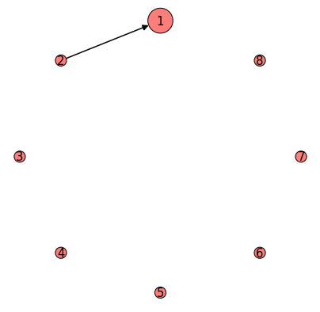
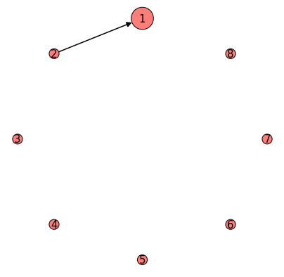

Google Cirq qcnn example¶
This notebook shows how to use the quantum_estimators package to generate Quantum Convolutional Neural Networks (QCNNs) using cirq and tensorflow quantum. The package implements the QCNN as a keras layer that contains logic for generating it’s circuit architecture via hyperparamaters while managing the variational circuit paramaters. It’s imported as follows: from quantum_estimators import Qcnn_cirq as Qcnn.
The example shown is a binary classification model that distinguishes between two musical genres using the well known GTZAN dataset.
# Load libraries
import sympy
import numpy as np
from collections import namedtuple
import pandas as pd
import cirq
import tensorflow as tf
import tensorflow_quantum as tfq
from tensorflow import keras
from sklearn.model_selection import train_test_split
# visualization tools
%matplotlib inline
import matplotlib.pyplot as plt
---------------------------------------------------------------------------
ModuleNotFoundError Traceback (most recent call last)
Input In [1], in <cell line: 5>()
3 import numpy as np
4 from collections import namedtuple
----> 5 import pandas as pd
6 import cirq
7 import tensorflow as tf
ModuleNotFoundError: No module named 'pandas'
Experimental setup¶
The dataset contains statistics from 1000 audio tracks, each being a 30-second recording of some song. Each song is given a label of one of the following ten musical genres: blues, classical, country, disco, hiphop, jazz, metal, pop, reggae, rock. See marsyas and kaggle for more info.
We’ll build a model to distinguish rock from reggae
# Specify data path
path = "../data/gtzan_30s_stats.csv"
# Specify genres to build classification model from, options are:
# blues, classical, country, disco, hiphop, jazz, metal, pop, reggae, rock
target_pair = ["rock", "reggae"]
# Read data
raw = pd.read_csv(path)
raw.head()
| filename | length | chroma_stft_mean | chroma_stft_var | rms_mean | rms_var | spectral_centroid_mean | spectral_centroid_var | spectral_bandwidth_mean | spectral_bandwidth_var | ... | mfcc16_var | mfcc17_mean | mfcc17_var | mfcc18_mean | mfcc18_var | mfcc19_mean | mfcc19_var | mfcc20_mean | mfcc20_var | label | |
|---|---|---|---|---|---|---|---|---|---|---|---|---|---|---|---|---|---|---|---|---|---|
| 0 | blues.00000.wav | 661794 | 0.350088 | 0.088757 | 0.130228 | 0.002827 | 1784.165850 | 129774.064525 | 2002.449060 | 85882.761315 | ... | 52.420910 | -1.690215 | 36.524071 | -0.408979 | 41.597103 | -2.303523 | 55.062923 | 1.221291 | 46.936035 | blues |
| 1 | blues.00001.wav | 661794 | 0.340914 | 0.094980 | 0.095948 | 0.002373 | 1530.176679 | 375850.073649 | 2039.036516 | 213843.755497 | ... | 55.356403 | -0.731125 | 60.314529 | 0.295073 | 48.120598 | -0.283518 | 51.106190 | 0.531217 | 45.786282 | blues |
| 2 | blues.00002.wav | 661794 | 0.363637 | 0.085275 | 0.175570 | 0.002746 | 1552.811865 | 156467.643368 | 1747.702312 | 76254.192257 | ... | 40.598766 | -7.729093 | 47.639427 | -1.816407 | 52.382141 | -3.439720 | 46.639660 | -2.231258 | 30.573025 | blues |
| 3 | blues.00003.wav | 661794 | 0.404785 | 0.093999 | 0.141093 | 0.006346 | 1070.106615 | 184355.942417 | 1596.412872 | 166441.494769 | ... | 44.427753 | -3.319597 | 50.206673 | 0.636965 | 37.319130 | -0.619121 | 37.259739 | -3.407448 | 31.949339 | blues |
| 4 | blues.00004.wav | 661794 | 0.308526 | 0.087841 | 0.091529 | 0.002303 | 1835.004266 | 343399.939274 | 1748.172116 | 88445.209036 | ... | 86.099236 | -5.454034 | 75.269707 | -0.916874 | 53.613918 | -4.404827 | 62.910812 | -11.703234 | 55.195160 | blues |
5 rows × 60 columns
# Specify target column
target = "label"
# Specify columns to remove
columns_to_remove = ["filename", "length", target]
For the data cleaning component we split the data into a test and train set and remove unnecesary columns.
# Seperate X (features) and y (target) from dataset
y = raw.loc[:, target]
X = raw.drop(columns_to_remove, axis=1)
# Split data into train and test sets
X_train, X_test, y_train, y_test = train_test_split(
X,
y,
test_size=0.3,
random_state=42,
)
# Use a named typle to keep track of the changes to train and test samples
Samples = namedtuple("Samples", ["X_train", "y_train", "X_test", "y_test"])
# samples_raw is an instance of Samples, containing the raw samples
# access train features by samples_raw.X_train
samples_raw = Samples(X_train, y_train, X_test, y_test)
Next we filter out all genres except those specified by target_pair.
# Filter out unneccesary data, only store songs with labels specified in target_pair
train_filter = np.where(
(samples_raw.y_train == target_pair[0]) | (samples_raw.y_train == target_pair[1])
)
test_filter = np.where(
(samples_raw.y_test == target_pair[0]) | (samples_raw.y_test == target_pair[1])
)
X_train_filtered, X_test_filtered = (
samples_raw.X_train.iloc[train_filter],
samples_raw.X_test.iloc[test_filter],
)
y_train_filtered, y_test_filtered = (
samples_raw.y_train.iloc[train_filter],
samples_raw.y_test.iloc[test_filter],
)
# Convert target to binary int values, (genre_1, genre_2)->(0,1)
y_train_filtered = np.where(y_train_filtered == target_pair[1], 1, 0)
y_test_filtered = np.where(y_test_filtered == target_pair[1], 1, 0)
# samples_filtered now contains the latest X, y train and test data
samples_filtered = Samples(
X_train_filtered, y_train_filtered, X_test_filtered, y_test_filtered
)
Preprocessing¶
Feature Scaling and Selection
Here we manually select $8$ features to build the model on and then scale them to range between $[0,\frac{\pi}{2}]$. The selection can be automated with strategies like PCA or tree based methods using sklearn pipelines. Even though we just scale the data, the code is presented in such a way so that it’s easy to add other pipeline steps.
# Specify features to build model on
features = ['mfcc2_var', 'mfcc3_var', 'mfcc4_var', 'mfcc5_var', 'mfcc7_var',
'mfcc8_var', 'mfcc11_mean', 'mfcc13_mean']
X_train_selected = np.array(samples_filtered.X_train[features])
X_test_selected = np.array(samples_filtered.X_test[features])
samples_selected = Samples(
X_train_selected, samples_filtered.y_train, X_test_selected, samples_filtered.y_test
)
from sklearn.preprocessing import MinMaxScaler
from sklearn.pipeline import Pipeline
# Create a pipeline_list which will contain preprocessing steps
pipeline_list = []
# For now we only scale the data, but more complicated pipelines can be constructed with this pattern
scaler = (
"minmax",
MinMaxScaler(feature_range=[0, np.pi / 2]),
)
pipeline_list.append(scaler)
pipeline = Pipeline(pipeline_list)
# Fit pipeline
pipeline.fit(samples_selected.X_train, samples_selected.y_train)
# Transform data
X_train_tfd = pipeline.transform(samples_selected.X_train)
X_test_tfd = pipeline.transform(samples_selected.X_test)
samples_tfd = Samples(
X_train_tfd, samples_selected.y_train, X_test_tfd, samples_selected.y_test
)
Encode data into a quantum state¶
def qubit_encoding(x, gate=cirq.rx):
circuit = cirq.Circuit()
for i, value in enumerate(x):
qubit = cirq.LineQubit(i)
circuit.append(gate(value).on(qubit))
return circuit
X_train_encoded = tfq.convert_to_tensor([qubit_encoding(x) for x in samples_tfd.X_train])
X_test_encoded = tfq.convert_to_tensor([qubit_encoding(x) for x in samples_tfd.X_test])
samples_encoded = Samples(
X_train_encoded, samples_tfd.y_train, X_test_encoded, samples_tfd.y_test
)
Build model¶
from quantum_estimators import Qcnn_cirq as Qcnn
from cirq.contrib.svg import SVGCircuit
qcnn = Qcnn()
# display default circuit and configuration
SVGCircuit(qcnn.circuit)
def U(bits, symbols=None):
circuit = cirq.Circuit()
q0, q1 = cirq.LineQubit(bits[0]), cirq.LineQubit(bits[1])
# circuit += cirq.H(q0)
# circuit += cirq.H(q1)
circuit += cirq.rz(symbols[0]).on(q1).controlled_by(q0)
# circuit += cirq.rz(symbols[1]).on(q0).controlled_by(q1)
return circuit
def V(bits, symbols=None):
circuit = cirq.Circuit()
q0, q1 = cirq.LineQubit(bits[0]), cirq.LineQubit(bits[1])
circuit += cirq.CNOT(q0, q1)
return circuit
qcnn = Qcnn(n_q=4, s_c=1, s_p=0, pool_filter="right", convolution_mapping={1: (U, 1)}, pooling_mapping={1: (V, 0)})
SVGCircuit(qcnn.circuit)

Scale up model to 8 qubits, change convolution stride to $s_c=3$
qcnn = Qcnn(n_q=8, s_c=3, s_p=0, pool_filter="inside", convolution_mapping={1: (U, 1)}, pooling_mapping={1: (V, 0)})
SVGCircuit(qcnn.circuit)

print(f"Readout qubit: {qcnn.readout}")
print(f"Measure gate: {qcnn.ops_gate}")
print(f"Number of qubits: {qcnn.n_q}")
print(f"Convolution stride s_c: {qcnn.s_c}")
print(f"Pooling stride s_p: {qcnn.s_p}")
Readout qubit: 1
Measure gate: Z
Number of qubits: 4
Convolution stride s_c: 1
Pooling stride s_p: 0
from quantum_estimators import plot_qcnn_graphs
figs = plot_qcnn_graphs(qcnn.graphs, arrowsize=15, font_size=15)


 

# === Specify hyperparamaters ===
# Number of qubits (since we're using qubit encoding ensure there is a one-one mapping between feature and qubit)
n_q = 8
# Convolution Stride
s_c = 5
# Pooling Stride
s_p = 0
# Pooling Filter, options: right, left, inside, outside, even, odd
pool_filter = "right"
model = tf.keras.Sequential(
[
# The Qcnn layer returns the expected value of the readout gate, range [-1,1]. By default readout is criq.Z and the model determines
# which qubit to measure based on the one that's left over
Qcnn(
n_q=n_q,
s_c=s_c,
s_p=s_p,
pool_filter=pool_filter,
),
# Convert expectation values to lie between 0 and 1
tf.keras.layers.Rescaling(1.0 / 2, offset=.5),
]
)
model.compile(
optimizer="Adam",
loss="binary_crossentropy",
metrics=[tf.keras.metrics.BinaryAccuracy(threshold=0.5)],
)
# model.run_eagerly = True
model.fit(x=samples_encoded.X_train, y=samples_encoded.y_train, epochs=120)
Epoch 1/120
5/5 [==============================] - 2s 75ms/step - loss: 0.6886 - binary_accuracy: 0.4853
Epoch 2/120
5/5 [==============================] - 0s 74ms/step - loss: 0.6845 - binary_accuracy: 0.4853
Epoch 3/120
5/5 [==============================] - 0s 77ms/step - loss: 0.6806 - binary_accuracy: 0.4853
Epoch 4/120
5/5 [==============================] - 0s 67ms/step - loss: 0.6774 - binary_accuracy: 0.5221
Epoch 5/120
5/5 [==============================] - 0s 78ms/step - loss: 0.6737 - binary_accuracy: 0.5662
Epoch 6/120
5/5 [==============================] - 0s 76ms/step - loss: 0.6708 - binary_accuracy: 0.6691
Epoch 7/120
5/5 [==============================] - 0s 68ms/step - loss: 0.6683 - binary_accuracy: 0.7279
Epoch 8/120
5/5 [==============================] - 0s 73ms/step - loss: 0.6654 - binary_accuracy: 0.7794
Epoch 9/120
5/5 [==============================] - 0s 74ms/step - loss: 0.6634 - binary_accuracy: 0.8162
Epoch 10/120
5/5 [==============================] - 0s 70ms/step - loss: 0.6614 - binary_accuracy: 0.8529
Epoch 11/120
5/5 [==============================] - 0s 71ms/step - loss: 0.6599 - binary_accuracy: 0.8456
Epoch 12/120
5/5 [==============================] - 0s 69ms/step - loss: 0.6576 - binary_accuracy: 0.8162
Epoch 13/120
5/5 [==============================] - 0s 72ms/step - loss: 0.6561 - binary_accuracy: 0.8235
Epoch 14/120
5/5 [==============================] - 0s 74ms/step - loss: 0.6545 - binary_accuracy: 0.8235
Epoch 15/120
5/5 [==============================] - 0s 76ms/step - loss: 0.6532 - binary_accuracy: 0.8309
Epoch 16/120
5/5 [==============================] - 0s 72ms/step - loss: 0.6516 - binary_accuracy: 0.8309
Epoch 17/120
5/5 [==============================] - 0s 76ms/step - loss: 0.6501 - binary_accuracy: 0.8162
Epoch 18/120
5/5 [==============================] - 0s 70ms/step - loss: 0.6489 - binary_accuracy: 0.8015
Epoch 19/120
5/5 [==============================] - 0s 72ms/step - loss: 0.6472 - binary_accuracy: 0.7941
Epoch 20/120
5/5 [==============================] - 0s 74ms/step - loss: 0.6458 - binary_accuracy: 0.8088
Epoch 21/120
5/5 [==============================] - 0s 68ms/step - loss: 0.6444 - binary_accuracy: 0.8088
Epoch 22/120
5/5 [==============================] - 0s 74ms/step - loss: 0.6431 - binary_accuracy: 0.8162
Epoch 23/120
5/5 [==============================] - 0s 72ms/step - loss: 0.6418 - binary_accuracy: 0.8162
Epoch 24/120
5/5 [==============================] - 0s 72ms/step - loss: 0.6404 - binary_accuracy: 0.8235
Epoch 25/120
5/5 [==============================] - 0s 66ms/step - loss: 0.6392 - binary_accuracy: 0.8235
Epoch 26/120
5/5 [==============================] - 0s 69ms/step - loss: 0.6378 - binary_accuracy: 0.8309
Epoch 27/120
5/5 [==============================] - 0s 68ms/step - loss: 0.6365 - binary_accuracy: 0.8235
Epoch 28/120
5/5 [==============================] - 0s 64ms/step - loss: 0.6353 - binary_accuracy: 0.8382
Epoch 29/120
5/5 [==============================] - 0s 75ms/step - loss: 0.6339 - binary_accuracy: 0.8456
Epoch 30/120
5/5 [==============================] - 0s 67ms/step - loss: 0.6327 - binary_accuracy: 0.8456
Epoch 31/120
5/5 [==============================] - 0s 68ms/step - loss: 0.6315 - binary_accuracy: 0.8456
Epoch 32/120
5/5 [==============================] - 0s 70ms/step - loss: 0.6306 - binary_accuracy: 0.8456
Epoch 33/120
5/5 [==============================] - 0s 70ms/step - loss: 0.6290 - binary_accuracy: 0.8382
Epoch 34/120
5/5 [==============================] - 0s 68ms/step - loss: 0.6278 - binary_accuracy: 0.8382
Epoch 35/120
5/5 [==============================] - 0s 68ms/step - loss: 0.6266 - binary_accuracy: 0.8382
Epoch 36/120
5/5 [==============================] - 0s 70ms/step - loss: 0.6254 - binary_accuracy: 0.8529
Epoch 37/120
5/5 [==============================] - 0s 71ms/step - loss: 0.6242 - binary_accuracy: 0.8529
Epoch 38/120
5/5 [==============================] - 0s 70ms/step - loss: 0.6228 - binary_accuracy: 0.8529
Epoch 39/120
5/5 [==============================] - 0s 72ms/step - loss: 0.6218 - binary_accuracy: 0.8603
Epoch 40/120
5/5 [==============================] - 0s 69ms/step - loss: 0.6203 - binary_accuracy: 0.8676
Epoch 41/120
5/5 [==============================] - 0s 72ms/step - loss: 0.6190 - binary_accuracy: 0.8750
Epoch 42/120
5/5 [==============================] - 0s 67ms/step - loss: 0.6178 - binary_accuracy: 0.8676
Epoch 43/120
5/5 [==============================] - 0s 70ms/step - loss: 0.6168 - binary_accuracy: 0.8750
Epoch 44/120
5/5 [==============================] - 0s 73ms/step - loss: 0.6155 - binary_accuracy: 0.8824
Epoch 45/120
5/5 [==============================] - 0s 69ms/step - loss: 0.6144 - binary_accuracy: 0.8897
Epoch 46/120
5/5 [==============================] - 0s 69ms/step - loss: 0.6131 - binary_accuracy: 0.8529
Epoch 47/120
5/5 [==============================] - 0s 71ms/step - loss: 0.6120 - binary_accuracy: 0.8603
Epoch 48/120
5/5 [==============================] - 0s 68ms/step - loss: 0.6106 - binary_accuracy: 0.8750
Epoch 49/120
5/5 [==============================] - 0s 70ms/step - loss: 0.6094 - binary_accuracy: 0.8824
Epoch 50/120
5/5 [==============================] - 0s 67ms/step - loss: 0.6080 - binary_accuracy: 0.8824
Epoch 51/120
5/5 [==============================] - 0s 75ms/step - loss: 0.6068 - binary_accuracy: 0.8824
Epoch 52/120
5/5 [==============================] - 0s 68ms/step - loss: 0.6055 - binary_accuracy: 0.8897
Epoch 53/120
5/5 [==============================] - 0s 70ms/step - loss: 0.6045 - binary_accuracy: 0.8750
Epoch 54/120
5/5 [==============================] - 0s 69ms/step - loss: 0.6030 - binary_accuracy: 0.8750
Epoch 55/120
5/5 [==============================] - 0s 69ms/step - loss: 0.6017 - binary_accuracy: 0.8750
Epoch 56/120
5/5 [==============================] - 0s 72ms/step - loss: 0.6003 - binary_accuracy: 0.8824
Epoch 57/120
5/5 [==============================] - 0s 82ms/step - loss: 0.5990 - binary_accuracy: 0.8824
Epoch 58/120
5/5 [==============================] - 0s 72ms/step - loss: 0.5978 - binary_accuracy: 0.8897
Epoch 59/120
5/5 [==============================] - 0s 72ms/step - loss: 0.5965 - binary_accuracy: 0.8824
Epoch 60/120
5/5 [==============================] - 0s 77ms/step - loss: 0.5951 - binary_accuracy: 0.8750
Epoch 61/120
5/5 [==============================] - 0s 79ms/step - loss: 0.5940 - binary_accuracy: 0.8676
Epoch 62/120
5/5 [==============================] - 0s 76ms/step - loss: 0.5930 - binary_accuracy: 0.8603
Epoch 63/120
5/5 [==============================] - 0s 74ms/step - loss: 0.5918 - binary_accuracy: 0.8750
Epoch 64/120
5/5 [==============================] - 0s 76ms/step - loss: 0.5904 - binary_accuracy: 0.8676
Epoch 65/120
5/5 [==============================] - 0s 76ms/step - loss: 0.5892 - binary_accuracy: 0.8676
Epoch 66/120
5/5 [==============================] - 0s 73ms/step - loss: 0.5880 - binary_accuracy: 0.8750
Epoch 67/120
5/5 [==============================] - 0s 74ms/step - loss: 0.5868 - binary_accuracy: 0.8750
Epoch 68/120
5/5 [==============================] - 0s 77ms/step - loss: 0.5856 - binary_accuracy: 0.8750
Epoch 69/120
5/5 [==============================] - 0s 72ms/step - loss: 0.5844 - binary_accuracy: 0.8676
Epoch 70/120
5/5 [==============================] - 0s 81ms/step - loss: 0.5835 - binary_accuracy: 0.8603
Epoch 71/120
5/5 [==============================] - 0s 78ms/step - loss: 0.5822 - binary_accuracy: 0.8603
Epoch 72/120
5/5 [==============================] - 0s 80ms/step - loss: 0.5812 - binary_accuracy: 0.8603
Epoch 73/120
5/5 [==============================] - 0s 76ms/step - loss: 0.5800 - binary_accuracy: 0.8603
Epoch 74/120
5/5 [==============================] - 0s 67ms/step - loss: 0.5791 - binary_accuracy: 0.8603
Epoch 75/120
5/5 [==============================] - 0s 74ms/step - loss: 0.5780 - binary_accuracy: 0.8603
Epoch 76/120
5/5 [==============================] - 0s 75ms/step - loss: 0.5768 - binary_accuracy: 0.8676
Epoch 77/120
5/5 [==============================] - 0s 75ms/step - loss: 0.5760 - binary_accuracy: 0.8750
Epoch 78/120
5/5 [==============================] - 0s 76ms/step - loss: 0.5751 - binary_accuracy: 0.8750
Epoch 79/120
5/5 [==============================] - 0s 71ms/step - loss: 0.5742 - binary_accuracy: 0.8750
Epoch 80/120
5/5 [==============================] - 0s 71ms/step - loss: 0.5734 - binary_accuracy: 0.8750
Epoch 81/120
5/5 [==============================] - 0s 75ms/step - loss: 0.5724 - binary_accuracy: 0.8750
Epoch 82/120
5/5 [==============================] - 0s 74ms/step - loss: 0.5714 - binary_accuracy: 0.8750
Epoch 83/120
5/5 [==============================] - 0s 77ms/step - loss: 0.5706 - binary_accuracy: 0.8750
Epoch 84/120
5/5 [==============================] - 0s 72ms/step - loss: 0.5700 - binary_accuracy: 0.8676
Epoch 85/120
5/5 [==============================] - 0s 72ms/step - loss: 0.5692 - binary_accuracy: 0.8676
Epoch 86/120
5/5 [==============================] - 0s 73ms/step - loss: 0.5684 - binary_accuracy: 0.8676
Epoch 87/120
5/5 [==============================] - 0s 70ms/step - loss: 0.5674 - binary_accuracy: 0.8676
Epoch 88/120
5/5 [==============================] - 0s 73ms/step - loss: 0.5666 - binary_accuracy: 0.8676
Epoch 89/120
5/5 [==============================] - 0s 71ms/step - loss: 0.5660 - binary_accuracy: 0.8676
Epoch 90/120
5/5 [==============================] - 0s 70ms/step - loss: 0.5652 - binary_accuracy: 0.8750
Epoch 91/120
5/5 [==============================] - 0s 74ms/step - loss: 0.5655 - binary_accuracy: 0.8750
Epoch 92/120
5/5 [==============================] - 0s 79ms/step - loss: 0.5642 - binary_accuracy: 0.8750
Epoch 93/120
5/5 [==============================] - 0s 67ms/step - loss: 0.5633 - binary_accuracy: 0.8824
Epoch 94/120
5/5 [==============================] - 0s 70ms/step - loss: 0.5625 - binary_accuracy: 0.8750
Epoch 95/120
5/5 [==============================] - 1s 121ms/step - loss: 0.5619 - binary_accuracy: 0.8750
Epoch 96/120
5/5 [==============================] - 1s 136ms/step - loss: 0.5613 - binary_accuracy: 0.8676
Epoch 97/120
5/5 [==============================] - 1s 106ms/step - loss: 0.5608 - binary_accuracy: 0.8676
Epoch 98/120
5/5 [==============================] - 1s 118ms/step - loss: 0.5602 - binary_accuracy: 0.8676
Epoch 99/120
5/5 [==============================] - 1s 93ms/step - loss: 0.5598 - binary_accuracy: 0.8676
Epoch 100/120
5/5 [==============================] - 1s 101ms/step - loss: 0.5593 - binary_accuracy: 0.8676
Epoch 101/120
5/5 [==============================] - 1s 101ms/step - loss: 0.5588 - binary_accuracy: 0.8676
Epoch 102/120
5/5 [==============================] - 0s 90ms/step - loss: 0.5579 - binary_accuracy: 0.8750
Epoch 103/120
5/5 [==============================] - 0s 88ms/step - loss: 0.5577 - binary_accuracy: 0.8750
Epoch 104/120
5/5 [==============================] - 0s 86ms/step - loss: 0.5572 - binary_accuracy: 0.8750
Epoch 105/120
5/5 [==============================] - 0s 86ms/step - loss: 0.5565 - binary_accuracy: 0.8750
Epoch 106/120
5/5 [==============================] - 0s 86ms/step - loss: 0.5560 - binary_accuracy: 0.8824
Epoch 107/120
5/5 [==============================] - 0s 95ms/step - loss: 0.5555 - binary_accuracy: 0.8676
Epoch 108/120
5/5 [==============================] - 0s 87ms/step - loss: 0.5551 - binary_accuracy: 0.8676
Epoch 109/120
5/5 [==============================] - 0s 90ms/step - loss: 0.5547 - binary_accuracy: 0.8676
Epoch 110/120
5/5 [==============================] - 0s 93ms/step - loss: 0.5542 - binary_accuracy: 0.8676
Epoch 111/120
5/5 [==============================] - 0s 90ms/step - loss: 0.5538 - binary_accuracy: 0.8750
Epoch 112/120
5/5 [==============================] - 0s 82ms/step - loss: 0.5532 - binary_accuracy: 0.8824
Epoch 113/120
5/5 [==============================] - 1s 95ms/step - loss: 0.5530 - binary_accuracy: 0.8750
Epoch 114/120
5/5 [==============================] - 0s 99ms/step - loss: 0.5528 - binary_accuracy: 0.8750
Epoch 115/120
5/5 [==============================] - 0s 95ms/step - loss: 0.5523 - binary_accuracy: 0.8824
Epoch 116/120
5/5 [==============================] - 1s 104ms/step - loss: 0.5519 - binary_accuracy: 0.8824
Epoch 117/120
5/5 [==============================] - 1s 109ms/step - loss: 0.5521 - binary_accuracy: 0.8824
Epoch 118/120
5/5 [==============================] - 0s 71ms/step - loss: 0.5521 - binary_accuracy: 0.8824
Epoch 119/120
5/5 [==============================] - 0s 80ms/step - loss: 0.5517 - binary_accuracy: 0.8824
Epoch 120/120
5/5 [==============================] - 0s 82ms/step - loss: 0.5509 - binary_accuracy: 0.8897
<keras.callbacks.History at 0x7f201ecf2df0>
Evaluate¶
model.summary()
print(model.trainable_variables)
qcnn_results = model.evaluate(samples_encoded.X_test, samples_encoded.y_test)
# results.append([f"{s_c}_{s_p}_{pool_filter}", qcnn_results])
print(qcnn_results)
Model: "sequential"
_________________________________________________________________
Layer (type) Output Shape Param #
=================================================================
qcnn (Qcnn) (None, 1) 36
rescaling (Rescaling) (None, 1) 0
=================================================================
Total params: 36
Trainable params: 36
Non-trainable params: 0
_________________________________________________________________
[<tf.Variable 'Variable:0' shape=(1, 36) dtype=float32, numpy=
array([[2.7826772 , 6.0066533 , 1.9588009 , 5.884341 , 2.5834312 ,
5.1945367 , 2.4713411 , 0.10781987, 2.735536 , 3.0628562 ,
2.0703292 , 4.7336435 , 2.4305189 , 5.356263 , 2.2940617 ,
1.0740114 , 5.6477365 , 0.63895786, 3.3874536 , 0.41785088,
4.5846157 , 3.0830836 , 3.8996584 , 0.07007886, 1.3379577 ,
1.6324097 , 4.2188797 , 5.388001 , 1.916431 , 5.6466136 ,
4.1513786 , 0.4227728 , 6.017281 , 5.1567097 , 5.8956656 ,
3.200565 ]], dtype=float32)>]
2/2 [==============================] - 0s 58ms/step - loss: 0.5907 - binary_accuracy: 0.8125
[0.590722918510437, 0.8125]